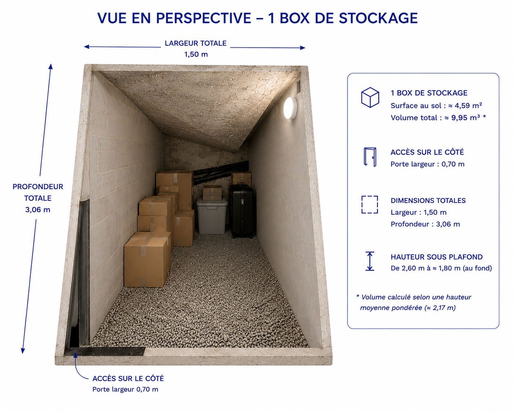

Des espaces propres et organisés
Des boxes individuels permettant de conserver vos affaires dans un environnement adapté.
Des boxes privés de 1m², sécurisés et accessibles sur rendez-vous.
À partir de 60€/mois
Voir les disponibilités📍 Paris 20e arrondissement
KareBoxParis propose des espaces de stockage privés, propres et sécurisés pour vos besoins personnels et professionnels.

Une surface idéale pour ranger vos affaires sans encombrer votre logement ou votre entreprise.
Des boxes individuels permettant de conserver vos affaires dans un environnement adapté.

Chaque espace dispose d'un accès contrôlé. L'ouverture se fait uniquement sur rendez-vous.

Un espace dédié pour conserver vos objets en toute tranquillité.